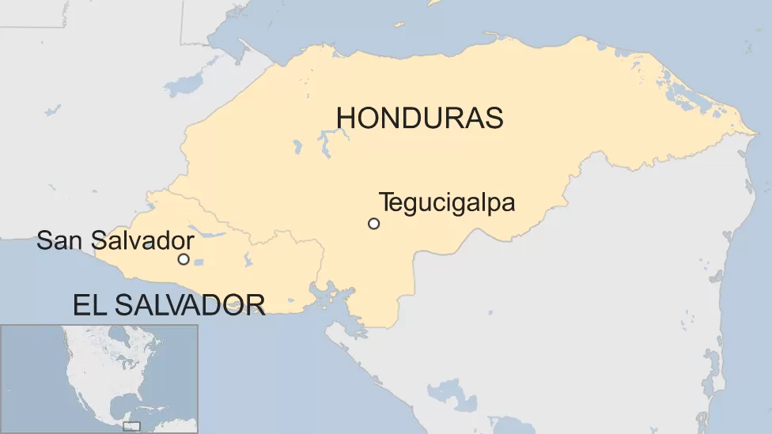

I. Prólogo
Honduras e El Salvador, países da América Central, compartilhavam uma situação rural semelhante: a predominância de uma elite latifundiária, mas a diferença é a quantidade de território.

Fonte: BBC
Honduras é muito maior em massa territorial do que El Salvador. E tem uma população menor do que El Salvador também:
- El Salvador: 3 Milhões
- Honduras: 2.3 Milhões
Isso fez com que muitos salvadorenhos imigrassem para Honduras em busca de terras e trabalho, o que causou ressentimentos dos camponeses hondurenhos, que também lutavam por terras no próprio território. A solução que o governo hondurenho encontrou foi deportar os salvadorenhos vivendo dentro de seu território, aumentando a tensão entre os dois países.
Outro foco de tensões foram as disputas de fronteiras terrestres e marítimas entre os dois governos na região do Golfo de Fonseca (localizado na parte de baixo do mapa mostrado anteriormente).
Por fim, eles também disputavam no futebol, competindo por uma vaga na Copa do Mundo do México de 1970, mesmo não tendo sido o motivo direto da guerra, essa disputa definitivamente contribuiu para seu começo.
(Continua após a publicidade)
II. A guerra
Era dia 27 de Junho de 1969, um jogo entre Honduras e El Salvador aconteceria na Cidade do México, nesse mesmo dia, El Salvador rompeu relações diplomáticas com Honduras. El Salvador ganhou de 3x2 de Honduras, com 1700 policiais mexicanos patrulhando o jogo e a torcida salvadorenha gritando "assassinos! assassinos!" da arquibancada. Seguindo o jogo, conflitos de fronteira ocorreram e se intensificaram. No dia 14 de Julho, o exército salvadorenho invadiu Honduras, acompanhado de aviões de guerra.
Enquanto o exército salvadorenho fazia grandes ofensivas em direção à capital de Honduras, a força aérea hondurenha atacou uma base aérea, um porto e outros pontos de extração de petróleo salvadorenhos. Os dois lados usavam aviões da época da Segunda Guerra Mundial.
III. Paz
Com medo de uma invasão na sua capital, Honduras pediu que a Organização dos Estados Americanos (OEA) intervisse na guerra, em uma reunião urgente no dia 18 de Julho, ela ordenou um cessar-fogo e o recúo das forças salvadorenhas de Honduras. Depois de resistir muito, El Salvador tirou suas tropas do território hondurenho no dia 02 de Agosto. O tratado de paz só foi feito e assinado no dia 30 de Outubro de 1980 em Lima, Perú, e a disputa territorial esteve sendo lentamente solucionada durante as últmas 3 décadas.
Por volta de 3000 pessoas morreram durante a guerra, e a fronteira entre os dois países foi fechada. El Salvador jogou na Copa mesmo após ter começado a guerra, ela perdeu as suas três primeiras partidas e foi eliminada.
Vídeo mostrando a progressão territorial nos 4 dias da guerra (Créditos: EmperorTigerstar)
Vídeo contando a história da guerra, em inglês mas com legendas em português (Créditos: OverSimplified)
Fontes: